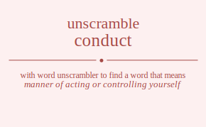

The word found after unscrambling conduct means that manner of acting or controlling yourself, (behavioral attributes) the way a person behaves toward other people, direct the course of; manage or control, lead, as in the performance of a composition; Barenboim conducted the Chicago symphony for years", behave in a certain manner, take somebody somewhere, transmit or serve as the medium for transmission, lead musicians in the performance of, .
